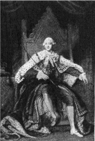
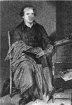
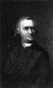

THE NEW COURSE IN BRITISH IMPERIAL POLICY
On October 25, 1760, King George II died and the British crown passed to his young grandson. The first

George, the son of the Elector of Hanover and Sophia the granddaughter of James I, was a thorough German who never even learned to speak the language of the land over which he reigned. The second George never saw England until he was a man. He spoke English with an accent and until his death preferred his German home. During their reign, the principle had become well established that the king did not govern but acted only through ministers representing the majority in Parliament.
George III and His System
The Character of the New King. —The third George rudely broke the German tradition of his family. He resented the imputation that he was a foreigner and on all occasions made a display of his British sympathies. To the draft of his first speech to Parliament, he added the popular phrase: "Born and educated in this country, I glory in the name of Briton." Macaulay, the English historian, certainly of no liking for high royal prerogative, said of George: "The young king was a born Englishman. All his tastes and habits, good and bad, were English. No portion of his subjects had anything to reproach him with.... His age, his appearance, and all that was known of his character conciliated public favor. He was in the bloom of youth; his person and address were pleasing; scandal imputed to him no vice; and flattery might without glaring absurdity ascribe to him many princely virtues."
Nevertheless George III had been spoiled by his mother, his tutors, and his courtiers. Under their influence he developed high and mighty notions about the sacredness of royal authority and his duty to check the pretensions of Parliament and the ministers dependent upon it. His mother had dinned into his ears the slogan: "George, be king!" Lord Bute, his teacher and adviser, had told him that his honor required him to take an active part in the shaping of public policy and the making of laws. Thus educated, he surrounded himself with courtiers who encouraged him in the determination to rule as well as reign, to subdue all parties, and to place himself at the head of the nation and empire.
From an old print
George III
Political Parties and George III. —The state of the political parties favored the plans of the king to restore some of the ancient luster of the crown. The Whigs, who were composed mainly of the smaller freeholders, merchants, inhabitants of towns, and Protestant non-conformists, had grown haughty and overbearing through long continuance in power and had as a consequence raised up many enemies in their own ranks. Their opponents, the Tories, had by this time given up all hope of restoring to the throne the direct Stuart line; but they still cherished their old notions about divine right. With the accession of George III the coveted opportunity came to them to rally around the throne again. George received his Tory friends with open arms, gave them offices, and bought them seats in the House of Commons.
The British Parliamentary System. —The peculiarities of the British Parliament at the time made smooth the way for the king and his allies with their designs for controlling the entire government. In the first place, the House of Lords was composed mainly of hereditary nobles whose number the king could increase by the appointment of his favorites, as of old. Though the members of the House of Commons were elected by popular vote, they did not speak for the mass of English people. Great towns like Leeds, Manchester, and Birmingham, for example, had no representatives at all. While there were about eight million inhabitants in Great Britain, there were in 1768 only about 160,000 voters; that is to say, only about one in every ten adult males had a voice in the government. Many boroughs returned one or more members to the Commons although they had merely a handful of voters or in some instances no voters at all. Furthermore, these tiny boroughs were often controlled by lords who openly sold the right of representation to the highest bidder. The "rotten-boroughs," as they were called by reformers, were a public scandal, but George III readily made use of them to get his friends into the House of Commons.
George III's Ministers and Their Colonial Policies
Grenville and the War Debt. —Within a year after the accession of George III, William Pitt was turned out of office, the king treating him with "gross incivility" and the crowds shouting "Pitt forever!" The direction of affairs was entrusted to men enjoying the king's confidence. Leadership in the House of Commons fell to George Grenville, a grave and laborious man who for years had groaned over the increasing cost of government.
The first task after the conclusion of peace in 1763 was the adjustment of the disordered finances of the kingdom. The debt stood at the highest point in the history of the country. More revenue was absolutely necessary and Grenville began to search for it, turning his attention finally to the American colonies. In this quest he had the aid of a zealous colleague, Charles Townshend, who had long been in public service and was familiar with the difficulties encountered by royal governors in America. These two men, with the support of the entire ministry, inaugurated in February, 1763, "a new system of colonial government. It was announced by authority that there were to be no more requisitions from the king to the colonial assemblies for supplies, but that the colonies were to be taxed instead by act of Parliament. Colonial governors and judges were to be paid by the Crown; they were to be supported by a standing army of twenty regiments; and all the expenses of this force were to be met by parliamentary taxation."
Restriction of Paper Money (1763). —Among the many complaints filed before the board of trade were vigorous protests against the issuance of paper money by the colonial legislatures. The new ministry provided a remedy in the act of 1763, which declared void all colonial laws authorizing paper money or extending the life of outstanding bills. This law was aimed at the "cheap money" which the Americans were fond of making when specie was scarce—money which they tried to force on their English creditors in return for goods and in payment of the interest and principal of debts. Thus the first chapter was written in the long battle over sound money on this continent.
Limitation on Western Land Sales. —Later in the same year (1763) George III issued a royal proclamation providing, among other things, for the government of the territory recently acquired by the treaty of Paris from the French. One of the provisions in this royal decree touched frontiersmen to the quick. The contests between the king's officers and the colonists over the disposition of western lands had been long and sharp. The Americans chafed at restrictions on settlement. The more adventurous were continually moving west and "squatting" on land purchased from the Indians or simply seized without authority. To put an end to this, the king forbade all further purchases from the Indians, reserving to the crown the right to acquire such lands and dispose of them for settlement. A second provision in the same proclamation vested the power of licensing trade with the Indians, including the lucrative fur business, in the hands of royal officers in the colonies. These two limitations on American freedom and enterprise were declared to be in the interest of the crown and for the preservation of the rights of the Indians against fraud
The Sugar Act of 1764. —King George's ministers next turned their attention to measures of taxation and trade. Since the heavy debt under which England was laboring had been largely incurred in the defense of America, nothing seemed more reasonable to them than the proposition that the colonies should help to bear the burden which fell so heavily upon the English taxpayer. The Sugar Act of 1764 was the result of this reasoning. There was no doubt about the purpose of this law, for it was set forth clearly in the title:
"An act for granting certain duties in the British colonies and plantations in America ... for applying the produce of such duties ... towards defraying the expenses of defending, protecting and securing the said colonies and plantations ... and for more effectually preventing the clandestine conveyance of goods to and from the said colonies and plantations and improving and securing the trade between the same and Great Britain." The old Molasses Act had been prohibitive; the Sugar Act of 1764 was clearly intended as a revenue measure. Specified duties were laid upon sugar, indigo, calico, silks, and many other commodities imported into the colonies. The enforcement of the Molasses Act had been utterly neglected; but this Sugar Act had "teeth in it." Special precautions as to bonds, security, and registration of ship masters, accompanied by heavy penalties, promised a vigorous execution of the new revenue law.
The strict terms of the Sugar Act were strengthened by administrative measures. Under a law of the previous year the commanders of armed vessels stationed along the American coast were authorized to stop, search, and, on suspicion, seize merchant ships approaching colonial ports. By supplementary orders, the entire British official force in America was instructed to be diligent in the execution of all trade and navigation laws. Revenue collectors, officers of the army and navy, and royal governors were curtly ordered to the front to do their full duty in the matter of law enforcement. The ordinary motives for the discharge of official obligations were sharpened by an appeal to avarice, for naval officers who seized offenders against the law were rewarded by large prizes out of the forfeitures and penalties.
The Stamp Act (1765). —The Grenville-Townshend combination moved steadily towards its goal. While the Sugar Act was under consideration in Parliament, Grenville announced a plan for a stamp bill. The next year it went through both Houses with a speed that must have astounded its authors. The vote in the Commons stood 205 in favor to 49 against; while in the Lords it was not even necessary to go through the formality of a count. As George III was temporarily insane, the measure received royal assent by a commission acting as a board of regency. Protests of colonial agents in London were futile. "We might as well have hindered the sun's progress!" exclaimed Franklin. Protests of a few opponents in the Commons were equally vain. The ministry was firm in its course and from all appearances the Stamp Act hardly roused as much as a languid interest in the city of London. In fact, it is recorded that the fateful measure attracted less notice than a bill providing for a commission to act for the king when he was incapacitated.
The Stamp Act, like the Sugar Act, declared the purpose of the British government to raise revenue in America "towards defraying the expenses of defending, protecting, and securing the British colonies and plantations in America." It was a long measure of more than fifty sections, carefully planned and skillfully drawn. By its provisions duties were imposed on practically all papers used in legal transactions,—deeds, mortgages, inventories, writs, bail bonds,—on licenses to practice law and sell liquor, on college diplomas, playing cards, dice, pamphlets, newspapers, almanacs, calendars, and advertisements. The drag net was closely knit, for scarcely anything escaped.
The Quartering Act (1765). —The ministers were aware that the Stamp Act would rouse opposition in America—how great they could not conjecture. While the measure was being debated, a friend of General Wolfe, Colonel Barré, who knew America well, gave them an ominous warning in the Commons. "Believe me—remember I this day told you so—" he exclaimed, "the same spirit of freedom which actuated that people at first will accompany them still ... a people jealous of their liberties and who will vindicate them, if ever they should be violated." The answer of the ministry to a prophecy of force was a threat of force.
Preparations were accordingly made to dispatch a larger number of soldiers than usual to the colonies, and

the ink was hardly dry on the Stamp Act when Parliament passed the Quartering Act ordering the colonists to provide accommodations for the soldiers who were to enforce the new laws. "We have the power to tax them," said one of the ministry, "and we will tax them."
Colonial Resistance Forces Repeal
Popular Opposition. —The Stamp Act was greeted in America by an outburst of denunciation. The merchants of the seaboard cities took the lead in making a dignified but unmistakable protest, agreeing not to import British goods while the hated law stood upon the books. Lawyers, some of them incensed at the heavy taxes on their operations and others intimidated by patriots who refused to permit them to use stamped papers, joined with the merchants. Aristocratic colonial Whigs, who had long grumbled at the administration of royal governors, protested against taxation without their consent, as the Whigs had done in old England. There were Tories, however, in the colonies as in England—many of them of the official class—who denounced the merchants, lawyers, and Whig aristocrats as "seditious, factious and republican." Yet the opposition to the Stamp Act and its accompanying measure, the Quartering Act, grew steadily all through the summer of 1765.
In a little while it was taken up in the streets and along the countryside. All through the North and in some of the Southern colonies, there sprang up, as if by magic, committees and societies pledged to resist the Stamp Act to the bitter end. These popular societies were known as Sons of Liberty and Daughters of Liberty: the former including artisans, mechanics, and laborers; and the latter, patriotic women. Both groups were alike in that they had as yet taken little part in public affairs. Many artisans, as well as all the women, were excluded from the right to vote for colonial assemblymen.
While the merchants and Whig gentlemen confined their efforts chiefly to drafting well-phrased protests against British measures, the Sons of Liberty operated in the streets and chose rougher measures. They stirred up riots in Boston, New York, Philadelphia, and Charleston when attempts were made to sell the stamps. They sacked and burned the residences of high royal officers. They organized committees of inquisition who by threats and intimidation curtailed the sale of British goods and the use of stamped papers. In fact, the Sons of Liberty carried their operations to such excesses that many mild opponents of the stamp tax were frightened and drew back in astonishment at the forces they had unloosed. The Daughters of Liberty in a quieter way were making a very effective resistance to the sale of the hated goods by spurring on domestic industries, their own particular province being the manufacture of clothing, and devising substitutes for taxed foods. They helped to feed and clothe their families without buying British goods.
Patrick Henry
Legislative Action against the Stamp Act. —Leaders in the colonial assemblies, accustomed to battle against British policies, supported the popular protest. The Stamp Act was signed on March 22, 1765. On May 30, the Virginia House of Burgesses passed a set of resolutions declaring that the General Assembly of the colony alone had the right to lay taxes upon the inhabitants and that attempts to impose them
otherwise were "illegal, unconstitutional, and unjust." It was in support of these resolutions that Patrick Henry uttered the immortal challenge: "Cæsar had his Brutus, Charles I his Cromwell, and George III...."
Cries of "Treason" were calmly met by the orator who finished: "George III may profit by their example.
If that be treason, make the most of it."
The Stamp Act Congress. —The Massachusetts Assembly answered the call of Virginia by inviting the colonies to elect delegates to a Congress to be held in New York to discuss the situation. Nine colonies responded and sent representatives. The delegates, while professing the warmest affection for the king's person and government, firmly spread on record a series of resolutions that admitted of no double meaning. They declared that taxes could not be imposed without their consent, given through their respective colonial assemblies; that the Stamp Act showed a tendency to subvert their rights and liberties; that the recent trade acts were burdensome and grievous; and that the right to petition the king and Parliament was their heritage. They thereupon made "humble supplication" for the repeal of the Stamp Act.
The Stamp Act Congress was more than an assembly of protest. It marked the rise of a new agency of government to express the will of America. It was the germ of a government which in time was to supersede the government of George III in the colonies. It foreshadowed the Congress of the United States under the Constitution. It was a successful attempt at union. "There ought to be no New England men,"
declared Christopher Gadsden, in the Stamp Act Congress, "no New Yorkers known on the Continent, but all of us Americans."
The Repeal of the Stamp Act and the Sugar Act. —The effect of American resistance on opinion in England was telling. Commerce with the colonies had been effectively boycotted by the Americans; ships lay idly swinging at the wharves; bankruptcy threatened hundreds of merchants in London, Bristol, and Liverpool. Workingmen in the manufacturing towns of England were thrown out of employment. The government had sown folly and was reaping, in place of the coveted revenue, rebellion.
Perplexed by the storm they had raised, the ministers summoned to the bar of the House of Commons, Benjamin Franklin, the agent for Pennsylvania, who was in London. "Do you think it right," asked Grenville, "that America should be protected by this country and pay no part of the expenses?" The answer was brief: "That is not the case; the colonies raised, clothed, and paid during the last war twenty-five thousand men and spent many millions." Then came an inquiry whether the colonists would accept a modified stamp act. "No, never," replied Franklin, "never! They will never submit to it!" It was next suggested that military force might compel obedience to law. Franklin had a ready answer. "They cannot force a man to take stamps.... They may not find a rebellion; they may, indeed, make one."
The repeal of the Stamp Act was moved in the House of Commons a few days later. The sponsor for the repeal spoke of commerce interrupted, debts due British merchants placed in jeopardy, Manchester industries closed, workingmen unemployed, oppression instituted, and the loss of the colonies threatened.
Pitt and Edmund Burke, the former near the close of his career, the latter just beginning his, argued cogently in favor of retracing the steps taken the year before. Grenville refused. "America must learn," he wailed, "that prayers are not to be brought to Cæsar through riot and sedition." His protests were idle. The Commons agreed to the repeal on February 22, 1766, amid the cheers of the victorious majority. It was carried through the Lords in the face of strong opposition and, on March 18, reluctantly signed by the king, now restored to his right mind.
In rescinding the Stamp Act, Parliament did not admit the contention of the Americans that it was without power to tax them. On the contrary, it accompanied the repeal with a Declaratory Act. It announced that the colonies were subordinate to the crown and Parliament of Great Britain; that the king and Parliament therefore had undoubted authority to make laws binding the colonies in all cases whatsoever; and that the resolutions and proceedings of the colonists denying such authority were null and void.
The repeal was greeted by the colonists with great popular demonstrations. Bells were rung; toasts to the king were drunk; and trade resumed its normal course. The Declaratory Act, as a mere paper resolution, did not disturb the good humor of those who again cheered the name of King George. Their confidence was soon strengthened by the news that even the Sugar Act had been repealed, thus practically restoring the condition of affairs before Grenville and Townshend inaugurated their policy of "thoroughness."
Resumption of British Revenue and Commercial Policies
The Townshend Acts (1767). —The triumph of the colonists was brief. Though Pitt, the friend of America, was once more prime minister, and seated in the House of Lords as the Earl of Chatham, his severe illness gave to Townshend and the Tory party practical control over Parliament. Unconvinced by the experience with the Stamp Act, Townshend brought forward and pushed through both Houses of Parliament three measures, which to this day are associated with his name. First among his restrictive laws was that of June 29, 1767, which placed the enforcement of the collection of duties and customs on colonial imports and exports in the hands of British commissioners appointed by the king, resident in the colonies, paid from the British treasury, and independent of all control by the colonists. The second measure of the same date imposed a tax on lead, glass, paint, tea, and a few other articles imported into the colonies, the revenue derived from the duties to be applied toward the payment of the salaries and other expenses of royal colonial officials. A third measure was the Tea Act of July 2, 1767, aimed at the tea trade which the Americans carried on illegally with foreigners. This law abolished the duty which the East India Company had to pay in England on tea exported to America, for it was thought that English tea merchants might thus find it possible to undersell American tea smugglers.
Writs of Assistance Legalized by Parliament. —Had Parliament been content with laying duties, just as a manifestation of power and right, and neglected their collection, perhaps little would have been heard of the Townshend Acts. It provided, however, for the strict, even the harsh, enforcement of the law. It ordered customs officers to remain at their posts and put an end to smuggling. In the revenue act of June 29, 1767, it expressly authorized the superior courts of the colonies to issue "writs of assistance,"
empowering customs officers to enter "any house, warehouse, shop, cellar, or other place in the British colonies or plantations in America to search for and seize" prohibited or smuggled goods.
The writ of assistance, which was a general search warrant issued to revenue officers, was an ancient device hateful to a people who cherished the spirit of personal independence and who had made actual gains in the practice of civil liberty. To allow a "minion of the law" to enter a man's house and search his papers and premises, was too much for the emotions of people who had fled to America in a quest for self-government and free homes, who had braved such hardships to establish them, and who wanted to trade without official interference.
The writ of assistance had been used in Massachusetts in 1755 to prevent illicit trade with Canada and had aroused a violent hostility at that time. In 1761 it was again the subject of a bitter controversy which arose in connection with the application of a customs officer to a Massachusetts court for writs of assistance "as usual." This application was vainly opposed by James Otis in a speech of five hours' duration—a speech of such fire and eloquence that it sent every man who heard it away "ready to take up arms against writs of assistance." Otis denounced the practice as an exercise of arbitrary power which had cost one king his head and another his throne, a tyrant's device which placed the liberty of every man in jeopardy, enabling any petty officer to work possible malice on any innocent citizen on the merest suspicion, and to spread terror and desolation through the land. "What a scene," he exclaimed, "does this open! Every man, prompted by revenge, ill-humor, or wantonness to inspect the inside of his neighbor's house, may get a writ of assistance. Others will ask it from self-defense; one arbitrary exertion will provoke another until society is involved in tumult and blood." He did more than attack the writ itself. He said that Parliament could not establish it because it was against the British constitution. This was an assertion resting on

slender foundation, but it was quickly echoed by the people. Then and there James Otis sounded the call to America to resist the exercise of arbitrary power by royal officers. "Then and there," wrote John Adams,
"the child Independence was born." Such was the hated writ that Townshend proposed to put into the hands of customs officers in his grim determination to enforce the law.
The New York Assembly Suspended. —In the very month that Townshend's Acts were signed by the king, Parliament took a still more drastic step. The assembly of New York, protesting against the "ruinous and insupportable" expense involved, had failed to make provision for the care of British troops in accordance with the terms of the Quartering Act. Parliament therefore suspended the assembly until it promised to obey the law. It was not until a third election was held that compliance with the Quartering Act was wrung from the reluctant province. In the meantime, all the colonies had learned on how frail a foundation their representative bodies rested.
Renewed Resistance in America
From an old print
Samuel Adams
The Massachusetts Circular (1768). —Massachusetts, under the leadership of Samuel Adams, resolved to resist the policy of renewed intervention in America. At his suggestion the assembly adopted a Circular Letter addressed to the assemblies of the other colonies informing them of the state of affairs in Massachusetts and roundly condemning the whole British program. The Circular Letter declared that Parliament had no right to lay taxes on Americans without their consent and that the colonists could not, from the nature of the case, be represented in Parliament. It went on shrewdly to submit to consideration the question as to whether any people could be called free who were subjected to governors and judges appointed by the crown and paid out of funds raised independently. It invited the other colonies, in the most temperate tones, to take thought about the common predicament in which they were all placed.
The Dissolution of Assemblies. —The governor of Massachusetts, hearing of the Circular Letter, ordered the assembly to rescind its appeal. On meeting refusal, he promptly dissolved it. The Maryland, Georgia, and South Carolina assemblies indorsed the Circular Letter and were also dissolved at once. The Virginia House of Burgesses, thoroughly aroused, passed resolutions on May 16, 1769, declaring that the sole right of imposing taxes in Virginia was vested in its legislature, asserting anew the right of petition to the crown, condemning the transportation of persons accused of crimes or trial beyond the seas, and beseeching the king for a redress of the general grievances. The immediate dissolution of the Virginia assembly, in its turn, was the answer of the royal governor.
The Boston Massacre. —American opposition to the British authorities kept steadily rising as assemblies were dissolved, the houses of citizens searched, and troops distributed in increasing numbers among the centers of discontent. Merchants again agreed not to import British goods, the Sons of Liberty renewed their agitation, and women set about the patronage of home products still more loyally.
On the night of March 5, 1770, a crowd on the streets of Boston began to jostle and tease some British regulars stationed in the town. Things went from bad to worse until some "boys and young fellows" began to throw snowballs and stones. Then the exasperated soldiers fired into the crowd, killing five and wounding half a dozen more. The day after the "massacre," a mass meeting was held in the town and Samuel Adams was sent to demand the withdrawal of the soldiers. The governor hesitated and tried to compromise. Finding Adams relentless, the governor yielded and ordered the regulars away.
The Boston Massacre stirred the country from New Hampshire to Georgia. Popular passions ran high. The guilty soldiers were charged with murder. Their defense was undertaken, in spite of the wrath of the populace, by John Adams and Josiah Quincy, who as lawyers thought even the worst offenders entitled to their full rights in law. In his speech to the jury, however, Adams warned the British government against its course, saying, that "from the nature of things soldiers quartered in a populous town will always occasion two mobs where they will prevent one." Two of the soldiers were convicted and lightly punished.
Resistance in the South. —The year following the Boston Massacre some citizens of North Carolina, goaded by the conduct of the royal governor, openly resisted his authority. Many were killed as a result and seven who were taken prisoners were hanged as traitors. A little later royal troops and local militia met in a pitched battle near Alamance River, called the "Lexington of the South."
The Gaspee Affair and the Virginia Resolutions of 1773. —On sea as well as on land, friction between the royal officers and the colonists broke out into overt acts. While patrolling Narragansett Bay looking for smugglers one day in 1772, the armed ship, Gaspee, ran ashore and was caught fast. During the night several men from Providence boarded the vessel and, after seizing the crew, set it on fire. A royal commission, sent to Rhode Island to discover the offenders and bring them to account, failed because it could not find a single informer. The very appointment of such a commission aroused the patriots of Virginia to action; and in March, 1773, the House of Burgesses passed a resolution creating a standing committee of correspondence to develop coöperation among the colonies in resistance to British measures.
The Boston Tea Party. —Although the British government, finding the Townshend revenue act a failure, repealed in 1770 all the duties except that on tea, it in no way relaxed its resolve to enforce the other commercial regulations it had imposed on the colonies. Moreover, Parliament decided to relieve the British East India Company of the financial difficulties into which it had fallen partly by reason of the Tea Act and the colonial boycott that followed. In 1773 it agreed to return to the Company the regular import duties, levied in England, on all tea transshipped to America. A small impost of three pence, to be collected in America, was left as a reminder of the principle laid down in the Declaratory Act that Parliament had the right to tax the colonists.
This arrangement with the East India Company was obnoxious to the colonists for several reasons. It was an act of favoritism for one thing, in the interest of a great monopoly. For another thing, it promised to dump on the American market, suddenly, an immense amount of cheap tea and so cause heavy losses to American merchants who had large stocks on hand. It threatened with ruin the business of all those who were engaged in clandestine trade with the Dutch. It carried with it an irritating tax of three pence on imports. In Charleston, Annapolis, New York, and Boston, captains of ships who brought tea under this act were roughly handled. One night in December, 1773, a band of Boston citizens, disguised as Indians, boarded the hated tea ships and dumped the cargo into the harbor. This was serious business, for it was open, flagrant, determined violation of the law. As such the British government viewed it.
Retaliation by the British Government
Reception of the News of the Tea Riot. —The news of the tea riot in Boston confirmed King George in his conviction that there should be no soft policy in dealing with his American subjects. "The die is cast,"
he stated with evident satisfaction. "The colonies must either triumph or submit.... If we take the resolute part, they will undoubtedly be very meek." Lord George Germain characterized the tea party as "the proceedings of a tumultuous and riotous rabble who ought, if they had the least prudence, to follow their mercantile employments and not trouble themselves with politics and government, which they do not understand." This expressed, in concise form, exactly the sentiments of Lord North, who had then for three years been the king's chief minister. Even Pitt, Lord Chatham, was prepared to support the government in upholding its authority.
The Five Intolerable Acts. —Parliament, beginning on March 31, 1774, passed five stringent measures, known in American history as the five "intolerable acts." They were aimed at curing the unrest in America.
The first of them was a bill absolutely shutting the port of Boston to commerce with the outside world.
The second, following closely, revoked the Massachusetts charter of 1691 and provided furthermore that the councilors should be appointed by the king, that all judges should be named by the royal governor, and that town meetings (except to elect certain officers) could not be held without the governor's consent. A third measure, after denouncing the "utter subversion of all lawful government" in the provinces, authorized royal agents to transfer to Great Britain or to other colonies the trials of officers or other persons accused of murder in connection with the enforcement of the law. The fourth act legalized the quartering of troops in Massachusetts towns. The fifth of the measures was the Quebec Act, which granted religious toleration to the Catholics in Canada, extended the boundaries of Quebec southward to the Ohio River, and established, in this western region, government by a viceroy.
The intolerable acts went through Parliament with extraordinary celerity. There was an opposition, alert and informed; but it was ineffective. Burke spoke eloquently against the Boston port bill, condemning it roundly for punishing the innocent with the guilty, and showing how likely it was to bring grave consequences in its train. He was heard with respect and his pleas were rejected. The bill passed both houses without a division, the entry "unanimous" being made upon their journals although it did not accurately represent the state of opinion. The law destroying the charter of Massachusetts passed the Commons by a vote of three to one; and the third intolerable act by a vote of four to one. The triumph of the ministry was complete. "What passed in Boston," exclaimed the great jurist, Lord Mansfield, "is the overt act of High Treason proceeding from our over lenity and want of foresight." The crown and Parliament were united in resorting to punitive measures.
In the colonies the laws were received with consternation. To the American Protestants, the Quebec Act was the most offensive. That project they viewed not as an act of grace or of mercy but as a direct attempt to enlist French Canadians on the side of Great Britain. The British government did not grant religious toleration to Catholics either at home or in Ireland and the Americans could see no good motive in granting it in North America. The act was also offensive because Massachusetts, Connecticut, and Virginia had, under their charters, large claims in the territory thus annexed to Quebec.
To enforce these intolerable acts the military arm of the British government was brought into play. The commander-in-chief of the armed forces in America, General Gage, was appointed governor of Massachusetts. Reinforcements were brought to the colonies, for now King George was to give "the rebels," as he called them, a taste of strong medicine. The majesty of his law was to be vindicated by force.
From Reform to Revolution in America
The Doctrine of Natural Rights. —The dissolution of assemblies, the destruction of charters, and the use of troops produced in the colonies a new phase in the struggle. In the early days of the contest with the British ministry, the Americans spoke of their "rights as Englishmen" and condemned the acts of Parliament as unlawful, as violating the principles of the English constitution under which they all lived.
When they saw that such arguments had no effect on Parliament, they turned for support to their "natural
rights." The latter doctrine, in the form in which it was employed by the colonists, was as English as the constitutional argument. John Locke had used it with good effect in defense of the English revolution in the seventeenth century. American leaders, familiar with the writings of Locke, also took up his thesis in the hour of their distress. They openly declared that their rights did not rest after all upon the English constitution or a charter from the crown. "Old Magna Carta was not the beginning of all things," retorted Otis when the constitutional argument failed. "A time may come when Parliament shall declare every American charter void, but the natural, inherent, and inseparable rights of the colonists as men and as citizens would remain and whatever became of charters can never be abolished until the general conflagration." Of the same opinion was the young and impetuous Alexander Hamilton. "The sacred rights of mankind," he exclaimed, "are not to be rummaged for among old parchments or musty records. They are written as with a sunbeam in the whole volume of human destiny by the hand of divinity itself, and can never be erased or obscured by mortal power."
Firm as the American leaders were in the statement and defense of their rights, there is every reason for believing that in the beginning they hoped to confine the conflict to the realm of opinion. They constantly avowed that they were loyal to the king when protesting in the strongest language against his policies.
Even Otis, regarded by the loyalists as a firebrand, was in fact attempting to avert revolution by winning concessions from England. "I argue this cause with the greater pleasure," he solemnly urged in his speech against the writs of assistance, "as it is in favor of British liberty ... and as it is in opposition to a kind of power, the exercise of which in former periods cost one king of England his head and another his throne."
Burke Offers the Doctrine of Conciliation. —The flooding tide of American sentiment was correctly measured by one Englishman at least, Edmund Burke, who quickly saw that attempts to restrain the rise of American democracy were efforts to reverse the processes of nature. He saw how fixed and rooted in the nature of things was the American spirit—how inevitable, how irresistible. He warned his countrymen that there were three ways of handling the delicate situation—and only three. One was to remove the cause of friction by changing the spirit of the colonists—an utter impossibility because that spirit was grounded in the essential circumstances of American life. The second was to prosecute American leaders as criminals; of this he begged his countrymen to beware lest the colonists declare that "a government against which a claim of liberty is tantamount to high treason is a government to which submission is equivalent to slavery." The third and right way to meet the problem, Burke concluded, was to accept the American spirit, repeal the obnoxious measures, and receive the colonies into equal partnership.
Events Produce the Great Decision. —The right way, indicated by Burke, was equally impossible to George III and the majority in Parliament. To their narrow minds, American opinion was contemptible and American resistance unlawful, riotous, and treasonable. The correct way, in their view, was to dispatch more troops to crush the "rebels"; and that very act took the contest from the realm of opinion. As John Adams said: "Facts are stubborn things." Opinions were unseen, but marching soldiers were visible to the veriest street urchin. "Now," said Gouverneur Morris, "the sheep, simple as they are, cannot be gulled as heretofore." It was too late to talk about the excellence of the British constitution. If any one is bewildered by the controversies of modern historians as to why the crisis came at last, he can clarify his understanding by reading again Edmund Burke's stately oration, On Conciliation with America.
References
G.L. Beer, British Colonial Policy (1754-63).
E. Channing, History of the United States, Vol. III.
R. Frothingham, Rise of the Republic.
G.E. Howard, Preliminaries of the Revolution (American Nation Series).
J.T. Morse, Benjamin Franklin.
M.C. Tyler, Patrick Henry.
J.A. Woodburn (editor), The American Revolution (Selections from the English work by Lecky).
Questions
1. Show how the character of George III made for trouble with the colonies.
2. Explain why the party and parliamentary systems of England favored the plans of George III.
3. How did the state of English finances affect English policy?
4. Enumerate five important measures of the English government affecting the colonies between 1763 and 1765. Explain each in detail.
5. Describe American resistance to the Stamp Act. What was the outcome?
6. Show how England renewed her policy of regulation in 1767.
7. Summarize the events connected with American resistance.
8. With what measures did Great Britain retaliate?
9. Contrast "constitutional" with "natural" rights.
10. What solution did Burke offer? Why was it rejected?
Research Topics
Powers Conferred on Revenue Officers by Writs of Assistance. —See a writ in Macdonald, Source Book, p. 109.
The Acts of Parliament Respecting America. —Macdonald, pp. 117-146. Assign one to each student for report and comment.
Source Studies on the Stamp Act. —Hart, American History Told by Contemporaries, Vol. II, pp. 394-412.
Source Studies of the Townshend Acts. —Hart, Vol. II, pp. 413-433.
American Principles. —Prepare a table of them from the Resolutions of the Stamp Act Congress and the Massachusetts Circular. Macdonald, pp. 136-146.
An English Historian's View of the Period. —Green, Short History of England, Chap. X.
English Policy Not Injurious to America. —Callender, Economic History, pp. 85-121.
A Review of English Policy. —Woodrow Wilson, History of the American People, Vol. II, pp. 129-170.
The Opening of the Revolution. —Elson, History of the United States, pp. 220-235.